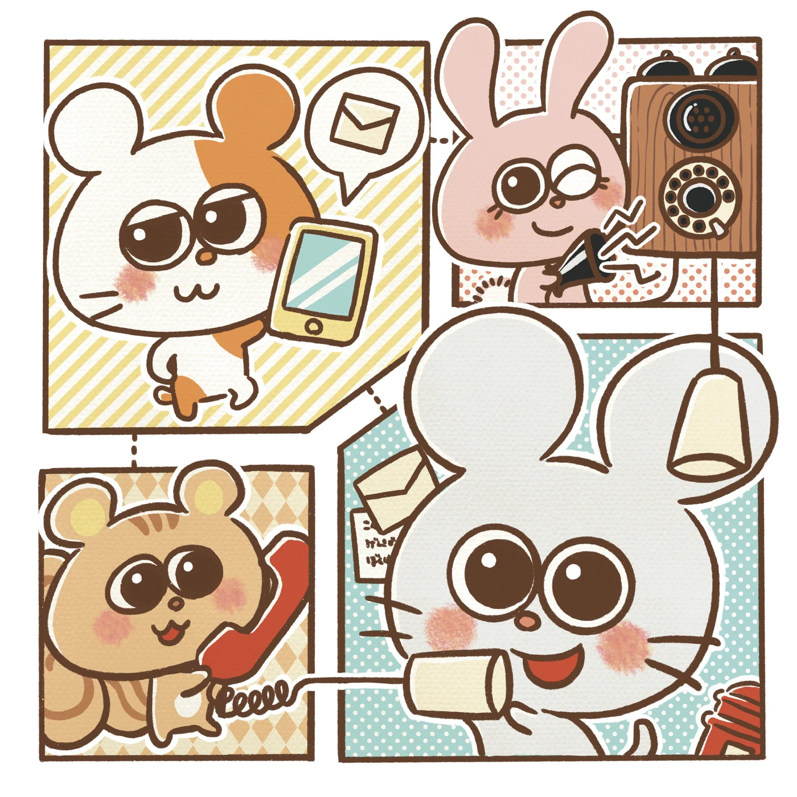
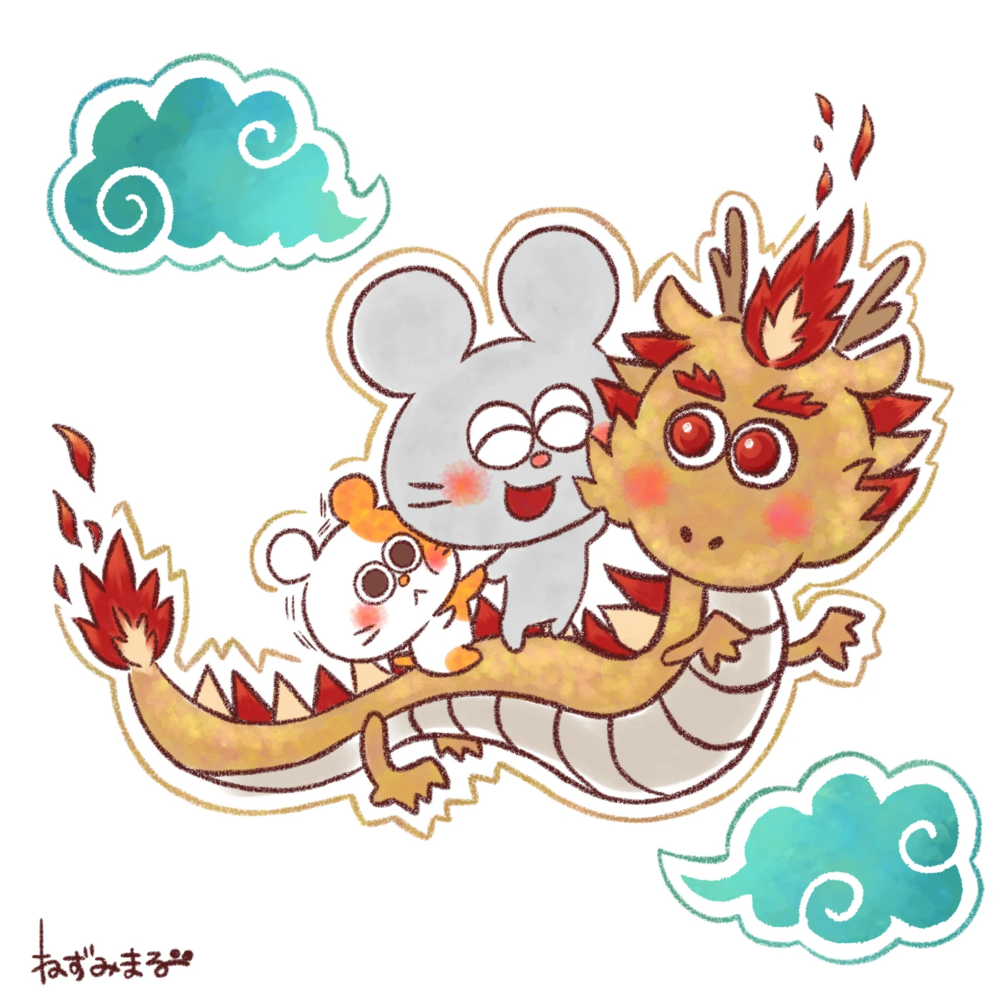
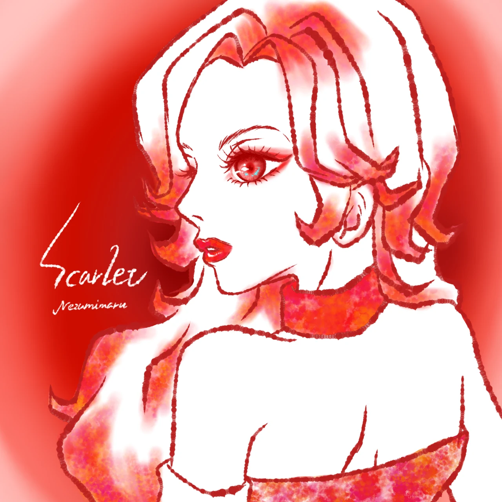
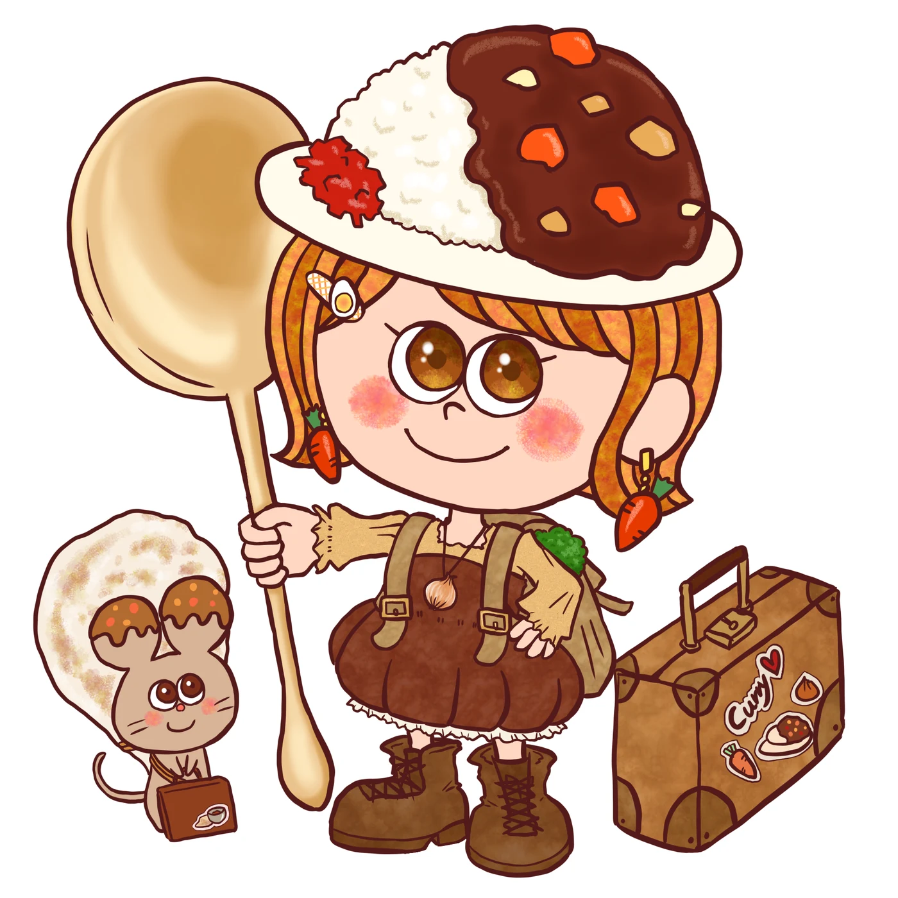
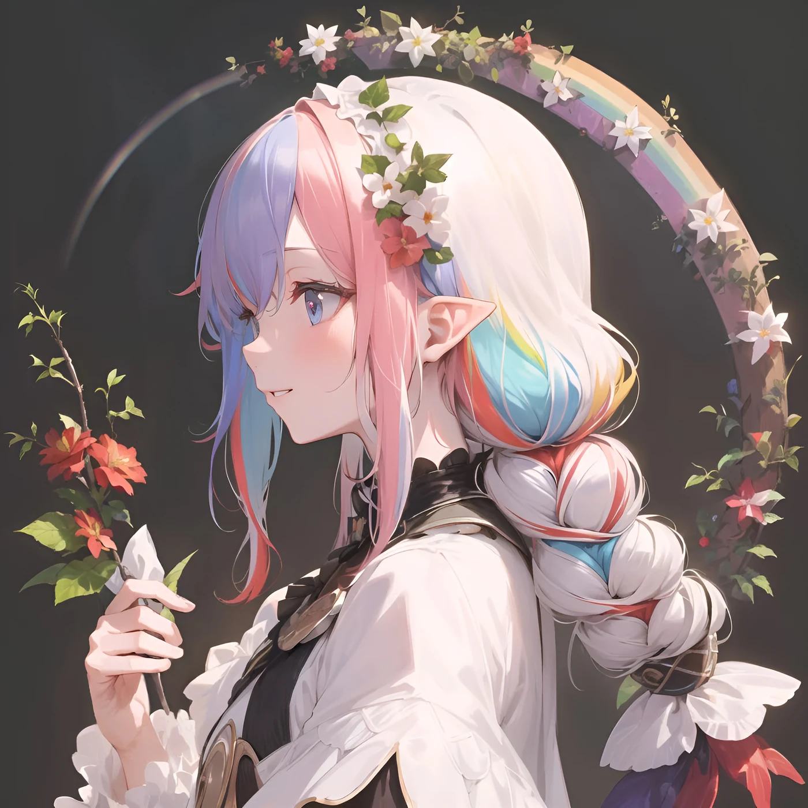
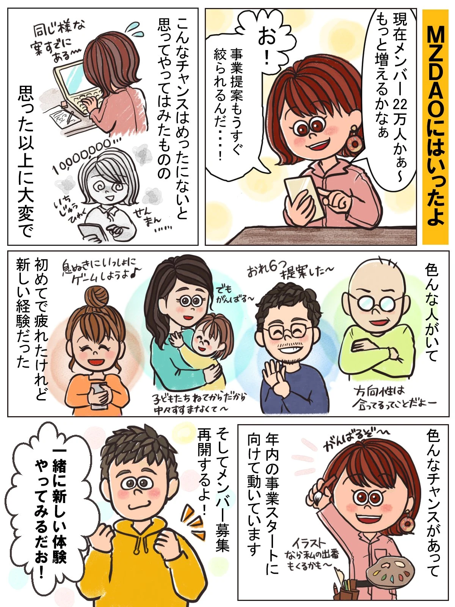
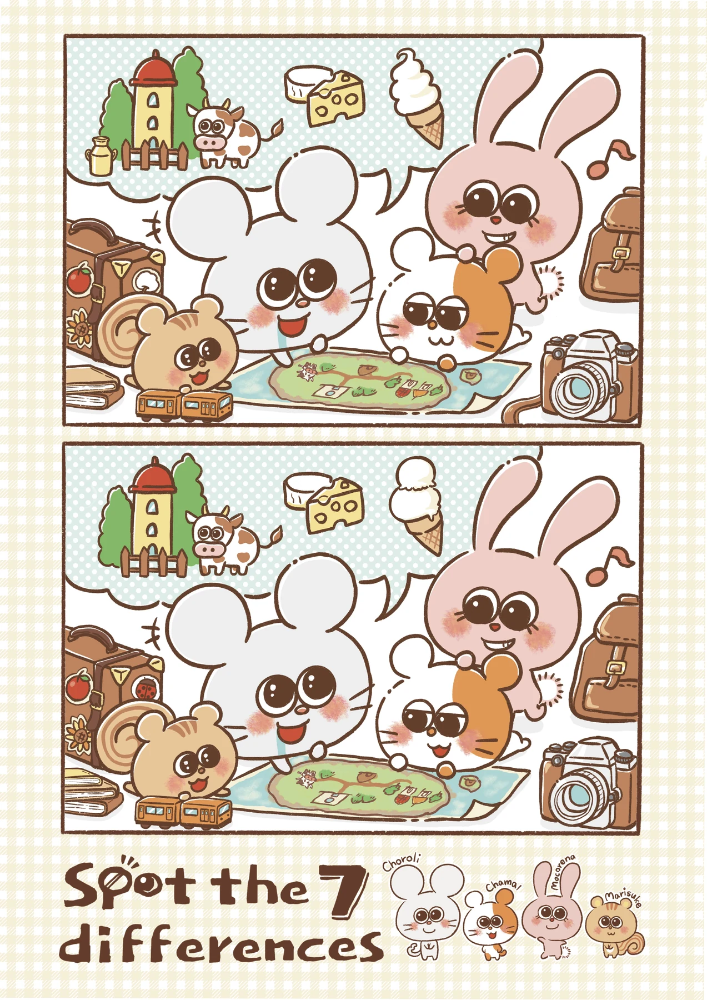

AWARDS & EXHIBITIONS
受賞作品と、展示のあゆみ。
イラスト、キャラクター、PR漫画。作品と一緒に、これまでの受賞・展示・掲載をご紹介します。
受賞作品
画像をタッチすると、大きくご覧いただけます。






ILLUSTRATION IN THE CITY
駅で出会う、ちょろりたち。
JR山手線の新橋駅・原宿駅・品川駅で展示されたイラスト。作品集「CUT 2024」にも掲載されています。
ちょろりたちに会いにいくEXHIBITIONS & PUBLICATIONS
主な展示・掲載
2025
- 10/28–11/6
- つくしのブックカバー展／枚方T-SITE 蔦屋書店（大阪）
2024
- 2/23–25
- 松本市立博物館（長野）
- 4/29–5/5
- 世田谷美術館（東京）
- 6/7–7/2
- 江別蔦屋書店（北海道）
- 8/1–9/30
- JR山手線 新橋駅（東京）
- 10/1–11/30
- JR山手線 原宿駅（東京）
- 11/30
- イラスト作品集「CUT 2024」掲載
- 12/1–翌1/30
- JR山手線 品川駅（東京）
2023
- 4月
- 渋谷PARCO（東京）
- 7/1–2
- 京セラドーム（大阪）
- 8/14〜
- 東京NFTアートキャラバン（上野）
- 9/16
- 和歌山城天守閣（和歌山）
- 10/7
- せんだいメディアテーク（宮城）
- 12/9–10
- ムーミンバレーパーク・メッツァビレッジ（埼玉）
活動歴の一覧は、リットリンクでもご覧いただけます。
リットリンクを見る制作で参加した受賞作品
2022年 Cluster GAMEJAM2022 テーマ賞受賞作品のワールド制作・バナーを担当
LET’S CREATE TOGETHER
想いをかたちにする、
お手伝いをします。
キャラクター・似顔絵・イラスト・デザイン。
まずは、お話を聞かせてください。